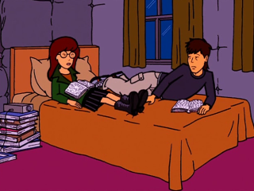

Episode Guide
Episode Guide
|  |
My Night at Daria's Episode #512 - June 18, 2001 Written by Peggy Nicoll Song List Entries For This Episode Oops! List Entries For This Episode Transcript For This Episode |
|
Previous "Prize Fighters" (#511) |
Next "Boxing Daria" (#513) |
|
Cast |
|---|
|
Regular:
Daria,
Quinn,
Helen,
Jake,
Jane,
Tom,
Kevin,
Brittany,
Jodie,
Upchuck
Guest: Tokyo Toby, Dr. E.L. Hask Non-Speaking: None |
|
Plot |
|
Summary:
When word gets out that Tom was caught sneaking out of Daria's house in the middle of the night, the assumption is that they are "doing it." Discussing the issue with Tom, Daria decides that she's ready to take their relationship to the next level... or is she? |
|
Interesting Tidbits |
Historical & Cultural References:
|
|
Memorable Quotes |
|
(Jake heads back upstairs and climbs into bed; Helen is barely awake) Helen - (sleepily) No wonder you can't sleep. Tokyo Toby's is poison. Jake - Is not... hey, I forgot to offer Tom some lazonny... (in Daria's bedroom) Helen (offscreen) - What?! (Daria, who was trying to sleep, suddenly opens her eyes and sits up in bed) Daria - Damn. One one thousand, two one thousand, three... (Helen bursts into the room) Helen - Daria, I need to talk to you, right now! Daria - ...one thousand. Helen - All right, Daria. I guess I can believe your story, though it seems pretty farfetched to me that two teenagers with raging hormones... Daria - My hormones don't rage. Oh, sure, they get mad sometimes, but then they just stop speaking to each other. Helen - Then tell me once again why Tom was slipping out the door at 4:00 A.M. like a common criminal? (at that, Quinn's eyes fly wide open and her jaw drops to the floor; it takes her several seconds to recover) Quinn - Phone! (reverses course and heads back to her bedroom) Helen - Not that I would ever try to talk you out of it -- which is not to say I'm trying to talk you into it -- it's just that I'd like to have the chance to discuss things with you first. I only wish I could have gone to my mother before I made such an awful mistake. What is it about stunt drivers that makes otherwise level-headed teenage girls just whip off their... Daria - (quickly interrupts) Okay, okay. Um, I've got to study. Big test. Biiig test... Daria - The problem with going to restaurants is that they're not in my room. Tom - I know what you mean. I have the same issue with hiking trails. Jake - Damn it, Helen, I know there's something crawling up my throat, and I think it's a parasite courtesy of Tokyo Toby's Parasite Restaurant! If I stand still, I can even feel it laughing inside of me... Helen - Now you're being ridiculous. Even if that horrible sushi did have a parasite, it couldn't have survived that much sake. Helen - Your father thinks he picked up a parasite eating sushi. Daria - You mean the kind that drill through your intestines, twisting and turning and driving you slowly insane until they grow eight feet long and corkscrew out through your vital organs? (her little revenge pays off: Jake starts freaking out, little by little, then collapses on the couch) Helen - Daria... Jake - Help me, Helen... before the madness sets in. Daria - Any further. Jane - Ah. I've been expecting your call Daria - Huh? Jane - All right, I'm listening. But for God's sake, at least spare me the squishier details and the rapturous declarations of undying love. Jodie - Hey, sex is nothing to be ashamed of, as long as you're responsible. Daria - So, then, you and Mack have... been responsible? Jodie - Um... I really don't want to discuss that right now. Daria - I understand. Jodie - I promise: soon as my parents are dead, I'll tell you all about it. (walks away) Daria - Okay. Just so long as there's nothing to be ashamed of. Jane - I knew I should have jumped Tom when I had the chance. (Daria gives her a cross look) Kidding! I told you, I'm waiting till college. 11:00 A.M. on move-in day. Jane - Anyway, being in a relationship can't possibly hinge on physical intimacy, 'cause that would mean our parents are still doing it. Daria - Which is absurd. Jane - No chance. Daria - I'd join the circus. Jane - Right behind you. Daria - Thanks for your insight. Jane - What I'm here for. Daria - (sighs) I know I shouldn't let it bother me, but there's this rumor going around school that you and I slept together. Tom - Really? Can we get that rumor started at my school? Tom - I thought you just said you wanted to. Daria - Not so much that I'm running around town with a neon birth control device in my purse. Daria - So, um... should we pick a date? Tom - Well... my parents are going out of town next weekend. How about then? Daria - No fair. Home court advantage. Tom - Fine. Your place. Daria - Like I'd ever find all the microphones Mom's hidden around my room. Tom - The Rendezvous Motel? You know, on Route 6. Daria - Gee, don't make me feel too special. Tom - All right, the boathouse at the lake, with the stars, the moon, the water? Daria - And the mosquitoes, the splinters, the security patrol? Tom - (frowning slightly) Okay, how about Mars, then? Soon as that whole colonization thing gets going? Daria - Okay, so I am a little very nervous. Jane - Of course you are! This is a big decision. A defining moment in your life! Daria - Oh, good -- that's not too much pressure. Jane - Or possibly just another adolescent embarrassment you'll need to repress in adulthood just to get out of bed in the morning. Daria - Huh. So far, that makes everything after my 12th birthday. Daria - Look, we both agreed that sleeping together would bring us closer, so... not doing it must be driving us apart. Tom - No, you said it would bring us closer and I said, fine, if that's the way you feel. I wasn't pushing this, you were, remember? I was perfectly happy with our relationship just the way it was. Daria - Perfectly happy? Tom - Okay, very content. Tom - You don't want to have sex because you're afraid it'll hurt our relationship, and then you break up with me. Doctor, my head. Daria - Tom and I didn't have sex, and we're not going to any time soon. Unless, of course, a bomb goes off and, as Earth's last two survivors, we must replenish the human race. Although, frankly, that's not motivation enough for me. (Helen sighs in relief) Helen - Well, I can't say I'm not somewhat relieved. I just want you to know that whatever decisions you make in life, I'm on your side and... (Daria lifts the newspaper high to hide from Helen) Daria - So instead, we've decided to sublimate our urges by traveling cross-country with a motorcycle gang. Helen - All right. You just remember to call home on Sunday nights. Daria - (lowers paper) Hey! Helen - Ha! |
|
Mike Quinn's Delayed Reaction Review |
|
Slumber Party:
The night begins with Daria and Tom sitting in the Morgendorffer's living room, each reading a thick book on some dry subject. All of the sudden, Quinn comes home and interrupts the solitude by bitching about her most recent date, and Daria and Tom are forced to retire to Daria's bedroom. They have to shut the door to reduce the noise from Quinn's boy band music. That move ensured that Helen and Jake, since they were out, had no idea that Tom was still there when they went to bed. Anyway, eventually the reading material got to Daria and Tom and they both nodded off to sleep. The hours passed by and at 4 AM, Tom wakes up and, to his astonishment sees that it's 4 AM. He wakes up Daria tells her that he's leaving and tries to get out of there as soon as humanly possible. Unfortunately, the timing of his escape was horrid. As soon as he was about to get out of the house, Jake comes rumbling down the stairs, drunk on sake and hungry because of his parasite (I'll get to that in the next section). Tom tries desperately to open the door, but it got stuck and the sound got Jake's attention. Jake, oblivious to the obvious implication at the time, helps Tom open the door and says goodbye to him. Then he goes back to bed and tells Helen what just happened. He might as well have set off an atomic blast, because Helen leaped up and darted into Daria's room to talk about it. Daria tells Helen what happened and Helen accepted her story, even though she probably didn't completely believe it ("Why else would Tom be sneaking out?" "...to avoid this lecture."). Daria says that she would tell Helen if something did happen (yeah, right) and Helen hoped that Daria would come to her to talk about it (not bloody likely). After all of this, Jake couldn't face Daria at all, or at least he couldn't talk to her.
Tom: You said you weren't ready.
It turns out that this has come up before for them and he backed off because she didn't want to go for it (though he could be "easily persuaded"). She then says that they should do it, but when he has a condom handy, it spooked her and she asks to just "forget about it." However, this isn't something that you can just forget about once it comes up (no pun intended). He didn't want to put any undue pressure on her, but he did want her to make up her mind, one way or the other. But even Tom had trouble talking about it once she decided to set a date and time. Sometimes it's easy to say you'll do something, but when the time comes to do that thing, it's anything but easy. |